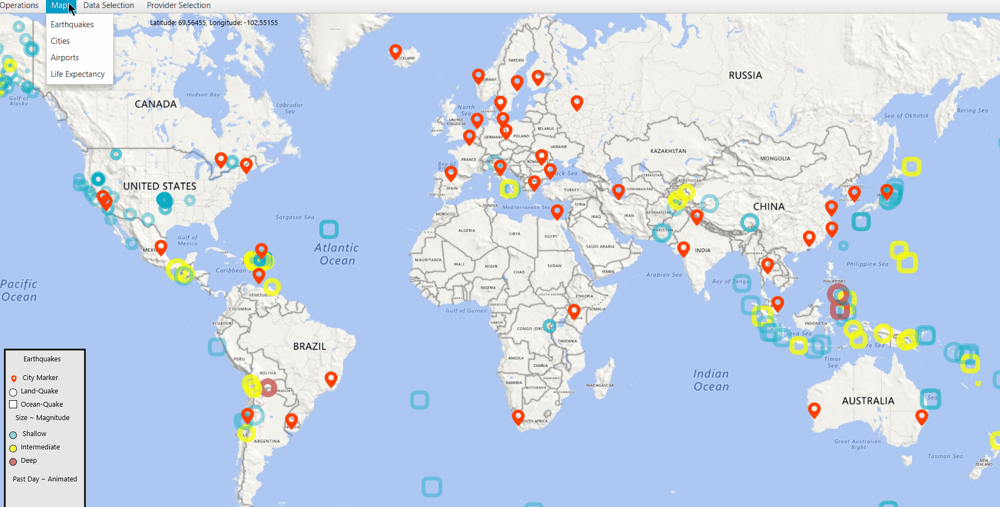
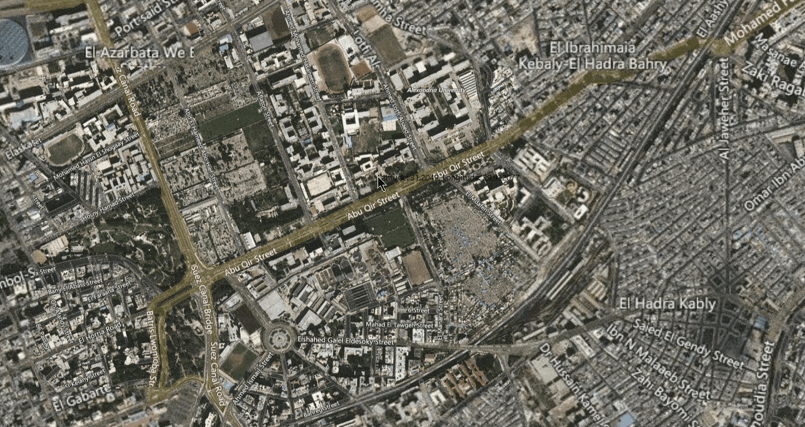
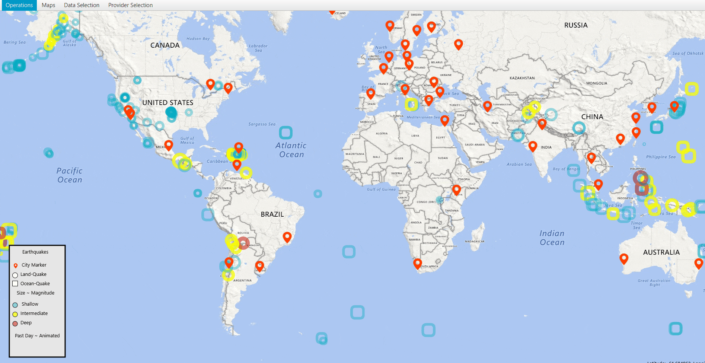
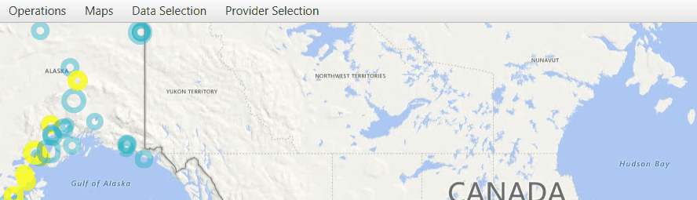
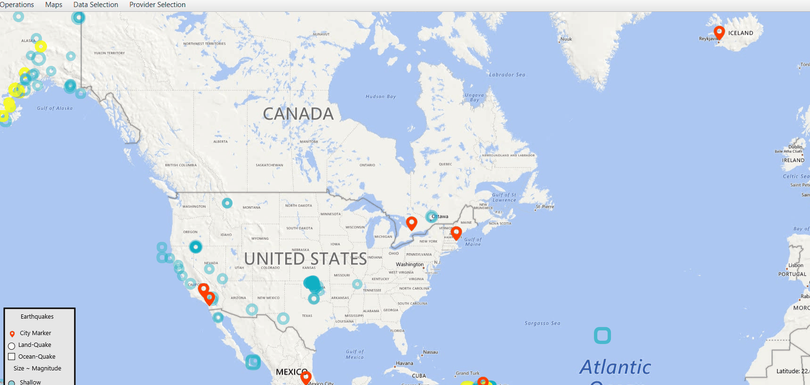
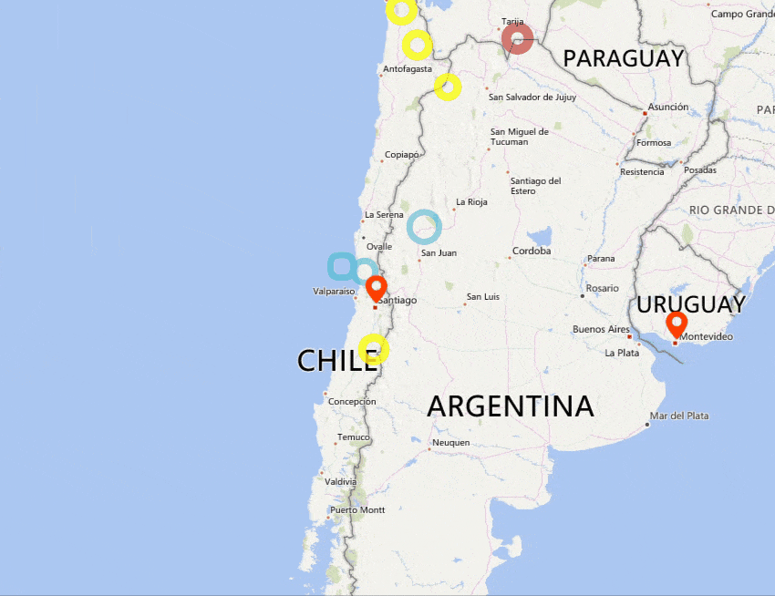
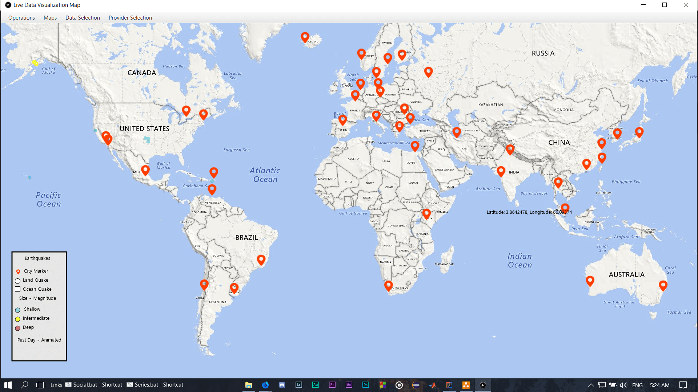
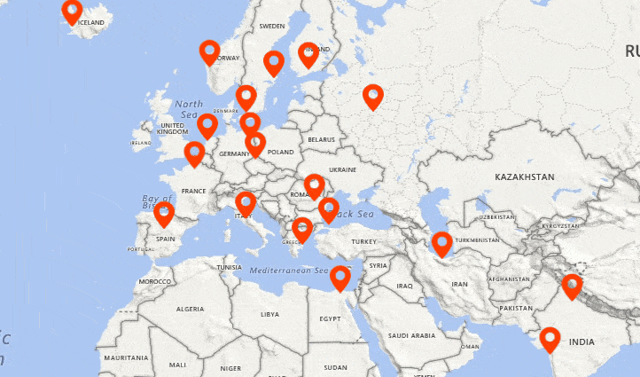
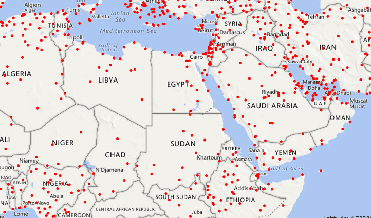
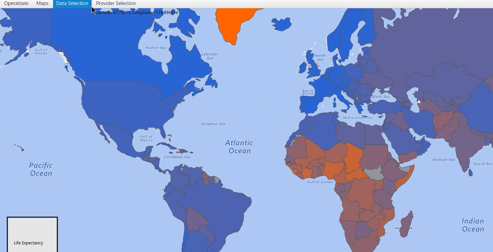

.png)
Live Data Visualization Map
An Application that takes data input of locations of certain events representing them in the form of interactive markers
.png)
Earthquakes Visualization
Provides Marker Visualization, Interactivity for Earthquakes data
Airports Visualization
Provides Marker Visualization, Interactivity for Airports' data
Life-Expectancy Visualization
Provides Mapping of values to color shades representing them
Live Data Visualization Map Documentation Source Code
An Application that takes data input of locations of certain events representing them in the form of interactive markers
Visualizations
The Map Can Visualize:
- Live or Local Earthquake data
- Data of Cities
- Airports’ data
- Life-Expectancy of Humans data
Provide Functionalities such as:
- Switching between the types of visualized data.

- Switching between the Satellite view of the map.

By default the Application opens up on Earthquakes’ data of the Past-Day.
Basic Features
- Basic Zoom functionalities as Google Maps
- Changing types of data using key strokes, ‘1’ Earthquakes data, ‘2’ Cities data, ‘3’ Airports data, ‘4’ Life-Expectancy data
- Zoom in using ‘+’ and zoom out using ‘-’, double mouse clicks, mouse scroll
- Movement around map using mouse clicks

Earthquakes Section
A Map that visualizes the Earthquake data in the form of interactive markers.
Have the following functionalities:
- Changing the Earthquake markers’ color dynamically based on their depth producing a light blue color for shallow depth, yellow for moderate and red for intense.
- The Increase or decrease of marker’s size dynamically based on magnitude.
- Representation of Earthquakes changing their shape based on where they occurred where quakes that happened on land are in the form of circles, while on ocean is in the form of rounded rectangles.
- Animation on the size of markers if they occurred in the past hour/day where they appear in radiating motion.

- The Ability to load and visualize Earthquake Data from USGS’s RSS feed in the form of Markers from USGS https://earthquake.usgs.gov/earthquakes as Live data including last hour, last day, last week and last month options or locally from your PC using a file chooser. (Uses Xerces 2 XML Library)

- The Ability to filter data based on either or both magnitude and depth criteria with an upper limit, lower limit, exact (uses exact floating point comparison) or ranged filters on loading of data or anytime after loading data.

- Showing information about the marker on mouse hover in the form of “magnitude, depth, description about its location, age”.
- Clicking on an Earthquake Marker, hides all markers on map except the City markers that are in its Threat circle aka Epicenter, Plotting a line between the Earthquake and the city or cities it might affect.
- Clicking on a City Marker hides all markers except Earthquake Markers that might affect the city.

Cities Section
A Map that visualizes the Cities’ data in the form of interactive markers.
Have the following functionalities:
- The Ability to load and visualize cities’ data of JSON format.

- Have mouse interactivity where hovering on a City Marker shows information about it including city name, country name, population of city.

Airports Section
A Map that visualizes the Airports’ data in the form of interactive markers.
Have the following functionalities:
- The Ability to load and visualize Airport’s data from https://openflights.org/ which holds live Airport data. (Uses Apache Commons CSV Parser library)
- Hovering on Airport Marker shows information about the airport including airport name, airport country, ICAO (3-letter code) and Timezone in UTC
- Clicking on Airport Marker hides all markers on the map, showing Lines from the clicked on marker to other airport markers representing all the existing routes from the clicked on marker as a source and other visible airports as destination, hiding all the airports that doesn’t have a route, Clicking elsewhere shows all markers returning the map to its original state.

Life-Expectancy Section
A Map that visualizes the Life-Expectancy of humans, shading the countries accordingly to represent mapped values.
Have the following functionalities:
- Have the Ability to load and visualize Life-Expectancy data from https://data.worldbank.org/ Mapping the values to Color values to represent them on the map accordingly. (Uses Apache Commons’ CSVParser library)
- Values being represented where high Life-Expectancy ( 90 years old ) tends to the blue shade while low Life-Expectancy ( 45 years old ) tends to the red shade.
- Can change the Life-Expectancy values to a certain year from 1960 to 2017 inclusive representing the Life-Expectancy values of countries for that year, the default year used is 2017.

Project Timelapse
Part one includes initial steps of parsing and loading Earthquakes data, life-expectancy data and initial visualization of map, Filtering API, Error handling.
Part two includes Redesign of Class Hierarchy, Full API Re-write to provide more extend-ability and ease of adding features, parsing and loading Cities’ data, Airports and routes data, Adding interactivity to the map using mouse hover and mouse clicks .